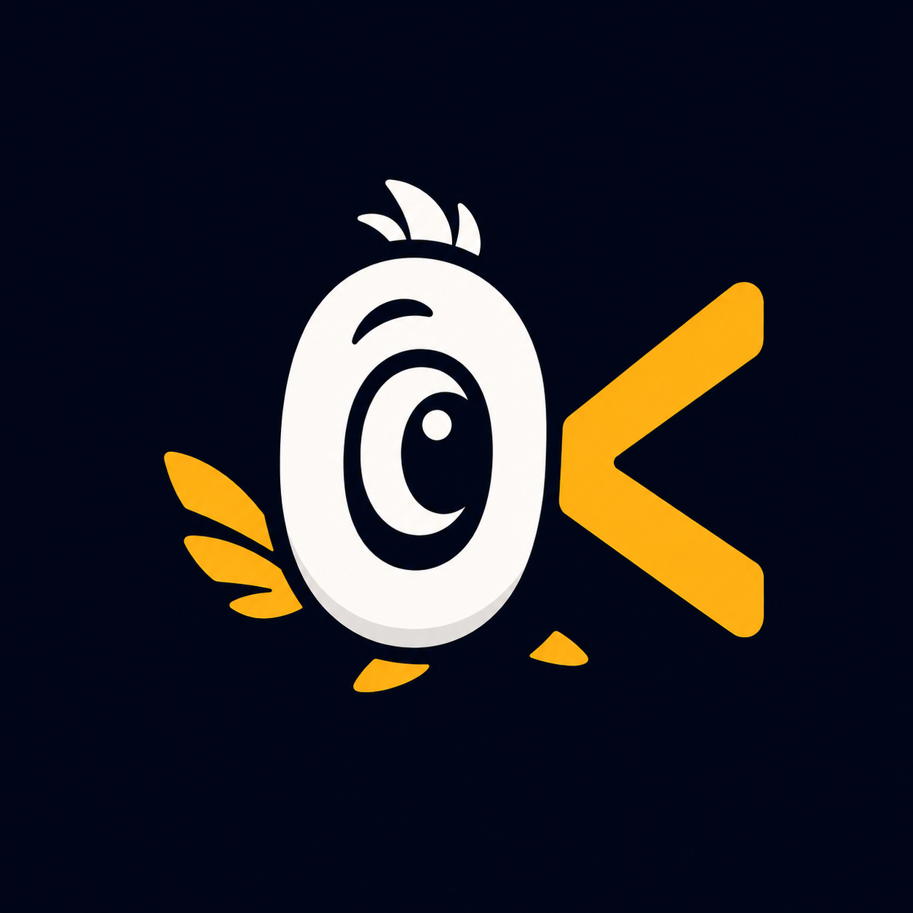

Behavior outside.
State inside.
An object answers questions and performs actions. Its fields are declared with has and kept behind its behavior.
THE OBJECT LANGUAGE
Behavior in objects. Contracts in roles.
State transitions you can see in the code.
Okkama turns the ideas of Elegant Objects into language rules: static typing, immutable objects, and composition instead of inheritance.

01 / THE IDEAS
Good architecture starts
with clear boundaries.
An object answers questions and performs actions. Its fields are declared with has and kept behind its behavior.
A successor returns the next object. The original stays unchanged, and the transition result cannot simply be discarded.
open() is ^BottleRoles define explicit contracts. Composition connects objects without tying them together through inheritance.
role · does · fake02 / A TASTE OF THE CODE
Read the signature.
Understand the intent.
open() returns a successor. The closed bottle stays unchanged, and the new state gets a new name.
03 / STATE WITHOUT SURPRISES
A transition creates a successor. The original object stays valid and unchanged. Open the bottle and see what happens to both values.
This illustrates the model; it does not execute Okkama. Immutable objects do not eliminate side effects. Files, networking, and external state still need explicit design.
let opened = bottle.open();04 / WHY IT MATTERS
Okkama is worth exploring when your code needs to speak the language of your domain.
Orders, payments, and documents with rules of their own. Constructors check invariants. Actions express business intent.
Created → authorized → captured. Roles and successors help describe which actions are valid in each state.
Errors as enums. Dependencies through roles. Test fakes alongside their contracts. Fewer implicit agreements between parts of a system.
The language and ecosystem are evolving. Before using Okkama in production, check the modules you need, current limitations, and runtime maturity.
05 / YOUR FIRST STEPS
One language. Three engines.Install the tools from Releases,
create a project, and run your first .ok file.
macOS · Linux x86_64
# After installing Okkama
$ blade new hello && cd hello
$ okkama src/main.ok
# Or choose an engine
$ okkama run --engine sparrow src/main.ok
$ okkama run --engine jvm src/main.ok
Good code
speaks for itself.